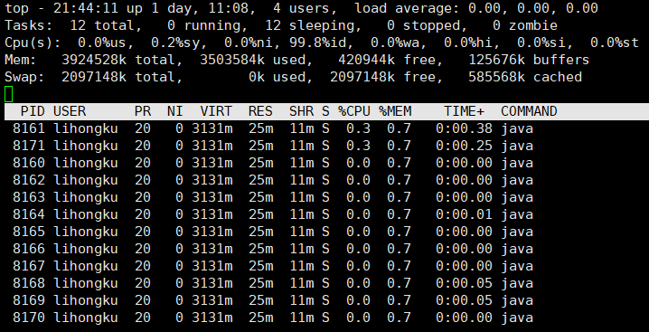
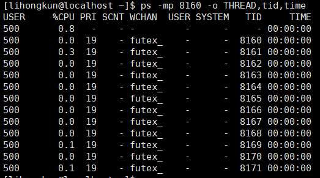

线上环境某个业务无端卡住,死锁或者CPU使用率突然飙得很高.通常情况下是某些线程下的代码作祟.如何排查到指定线程和指定代码.
举个简单的例子我运行了个死循环的代码只是打印出日志.
public static void main(String[] args) throws Exception {
while(true){
System.out.println("running...");
Thread.sleep(50);
}
}
操作系统命令
使用top -Hp $pid得出其中8161线程比较耗费CPU.

当然top的观测结果是一直在刷新的.我们也可以是用ps命令来看ps -mp $pid -o THREAD,tid,time 结果如下也是一致的.

找到了线程号,我们如果观测到它的线程栈呢,这就需要使用到JVM相关的工具了.
jstack
jstack 是一个检测线程的jvm工具.设置了环境变量后一般是可以直接执行,jstack $pid.
"main" #1 prio=5 os_prio=0 tid=0x00007fdc1c008800 nid=0x1fe1 waiting on condition [0x00007fdc23829000]
java.lang.Thread.State: TIMED_WAITING (sleeping)
at java.lang.Thread.sleep(Native Method)
at com.lihongkun.example.StackExample.main(StackExample.java:8)
"VM Thread" os_prio=0 tid=0x00007fdc1c0f9000 nid=0x1fe4 runnable
"GC task thread#0 (ParallelGC)" os_prio=0 tid=0x00007fdc1c01d800 nid=0x1fe2 runnable
"GC task thread#1 (ParallelGC)" os_prio=0 tid=0x00007fdc1c01f000 nid=0x1fe3 runnable
上面是使用jstack执行出来的结果,能清楚地看出各个线程的执行栈.而其中nid就是每个线程的线程号.main方法所在的线程的16进制线程号是1FE1 ,转为十进制则为8161,如此已经清楚查看出执行最占用CPU的是我们的main方法.
双剑合璧
上面的方式需要2个步骤去查看占用CPU高的线程,然后再使用jstack命令来找到相应的线程和对应的代码块.是否可用合并呢? 答案是肯定的.
pid=$1
sfile="/tmp/java.$pid.trace"
tfile="/tmp/java.$pid.trace.tmp"
rm -f $sfile $tfile
echo "pid $pid"
jstack $pid > $tfile
ps -mp $pid -o THREAD,tid,time|awk '{if ($2>0 && $8 != "-") print $8,$2}'|while read line;
do
nid=$(echo "$line"|awk '{printf("0x%x",$1)}')
cpu=$(echo "$line"|awk '{print $2}')
echo "nid: $nid, cpu: $cpu %">>$sfile
lines=`grep $nid -A 100 $tfile |grep -n '^$'|head -1|awk -F':' '{print $1}'`
((lines=$lines-1))
if [ "$lines" = "-1" ];
then
grep $nid -A 100 $tfile >>$sfile
echo '' >>$sfile
else
grep $nid -A $lines $tfile >>$sfile
fi
done
rm -f $tfile
echo "read msg in $sfile"
########### end ############
上面的脚本是合并后的只需要一个命令搞定. 执行 sh xxx.sh $pid结果如下
nid: 0x1fe1, cpu: 0.1 %
"main" #1 prio=5 os_prio=0 tid=0x00007fdc1c008800 nid=0x1fe1 waiting on condition [0x00007fdc23829000]
java.lang.Thread.State: TIMED_WAITING (sleeping)
at java.lang.Thread.sleep(Native Method)
at com.lihongkun.example.StackExample.main(StackExample.java:8)
nid: 0x1feb, cpu: 0.1 %
"VM Periodic Task Thread" os_prio=0 tid=0x00007fdc1c144800 nid=0x1feb waiting on condition
nid: 0x200f, cpu: 1.0 %
"Attach Listener" #8 daemon prio=9 os_prio=0 tid=0x00007fdbe8001000 nid=0x200f waiting on condition [0x0000000000000000]
java.lang.Thread.State: RUNNABLE
一般情况下,如果遇到执行效率相关的问题,我都是直接执行上述脚本,迅速找到相关代码,然后做相应的解决.
有位朋友用了一段时间这段脚本以后,推荐的一个代码仓库.类似的原理,相关的脚本更多. https://github.com/oldratlee/useful-scripts